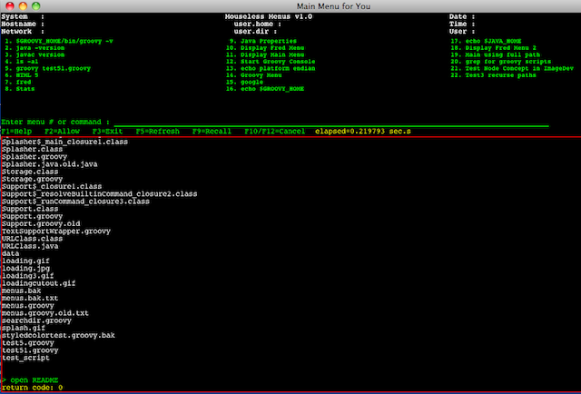

This app is NOT a bash shell. It does not hold state across commands. You cannot change directories unless that is done before Menus starts. You cannot use the bash shell expansion characters like * to gain a full list of matching objects. So something like 'ls -al *.java' will NOT filter your list of files. It just reports the file *.java as not found.
Function Key Usage - like IBM 5250 specifications F1 - Help F2 - Toggles ability to copy text from console message output at bottom of display. F3 - End menus and exit F5 - Refresh current menu, for example if you change the menu text file outside the menu system and want to reload the updated menu. F9 - Recall prior command on command line - similar to up arrow key in bash shell. F10 & F12 - backstep key; use this to return to a prior menu level above the current level. Both keys do the same as some keyboards may not have an F12 key.
The F9 function key works in the same way to walk back thru all of the prior commands entered. It mimics the bash shell 'up-arrow' feature to recall previous commands. When the command is visible on the command line, it can be changed if necessary. The enter key will cause that command to execute.

| A lime colored table background using color names. |
| A rose colored table background using hexadecimal values "#C00080". |
| A red colored table background using hexadecimal values "#FF0000". |
| A blue colored table background using RGB values "rgb(0, 0, 255)". |
Look at this reference: Free CSS Templates